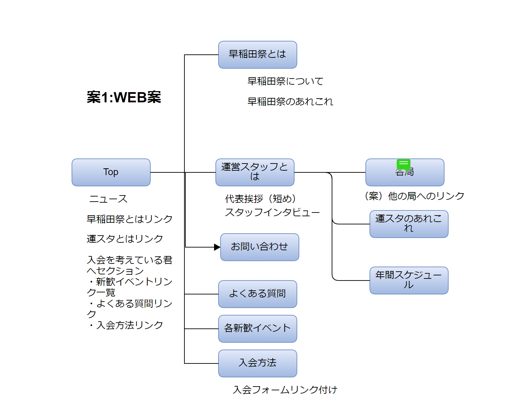
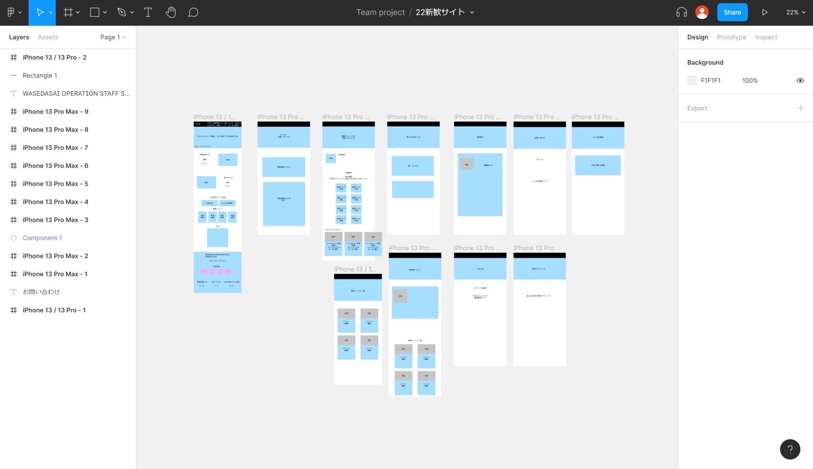
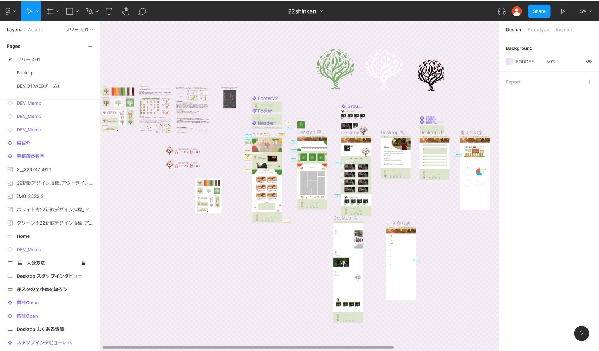
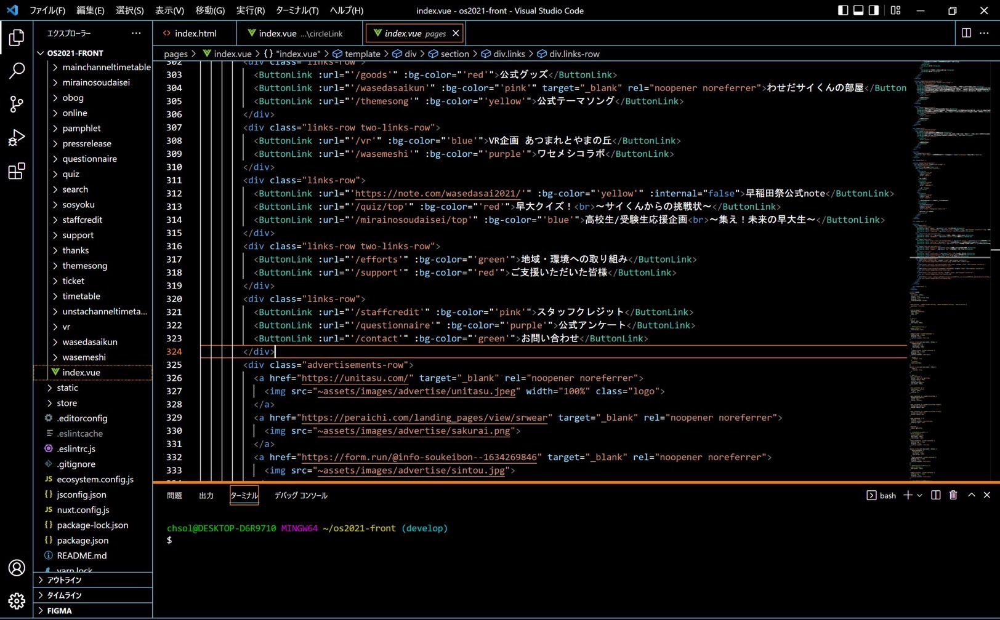

↓↓scroll↓↓

①必要なページを書き出し、どのページにどんな内容を載せるのか、どのページがどこにリンクしているかなどを図にまとめます。

②webサイトの骨組みです。テキストや画像などを簡素なラインとボックスで作成し、必要な項目や、配置、優先順位などを確認します。

③webサイトとして表示されたときと同じ状態になるよう、pc版やモバイル版、細かいところまで作りこみます。

④これまでの工程を形にする段階です。htmlやcssといった言語を使って実装し、実際にweb上で見れるようにします。